휘서 Hwiseo
Define
사진 찍기는 쉬워졌지만, 찍어 둔 사진을 되돌아보는 시간은 사라짐
생성형 AI가 무엇이든 만들어 내는 시대, 사람이 직접 찍고 겪은 순간의 가치는 그 안에 묻힘
필요한 건 사진을 정리해 주는 도구가 아니라, 잊힌 순간을 다시 꺼내 이야기하게 만드는 계기
Process
기획, 디자인, 개발 1인. 앱, 캐릭터, 부스, 영수증 사진기, 홍보 영상까지 직접 제작
사진을 대신 정리하거나 새 이미지를 만들어 주는 AI가 아니라, 사진을 보고 사람에게 질문하는 AI로 결정. 이야기의 주인이 사람이 되도록
촛불 캐릭터 '휘서'를 중심으로 앱 화면부터 부스 인쇄물까지 하나의 시각 언어로 통일
부스는 아트박스 다섯 개와 스탬프 투어 네 단계(영상, 앱, 영수증 사진, 엽서 꾸미기)로 구성. 영수증 사진기는 Python과 OpenCV로 직접 만들어 전시장의 구형 아이맥에서도 돌아가게 함
Result
12th IID Exhibition "WHY NOT?!"에서 관람객 200명 이상이 휘서와 이야기하고 영수증 사진과 엽서를 가져감
누구나 써 볼 수 있는 웹앱으로 공개
KALEIIDOZINE 8호 인터뷰
Tool
Claude Code, Adobe Illustrator
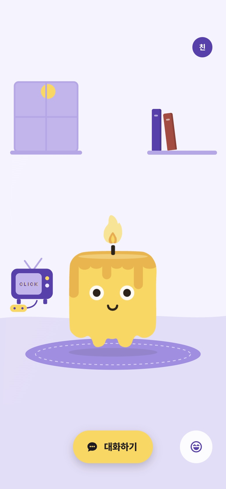
"So I think now AI is just more focused on making something new, but I think AI can also be used to recall whatever we already made. So I try to put more value on what people have already made."
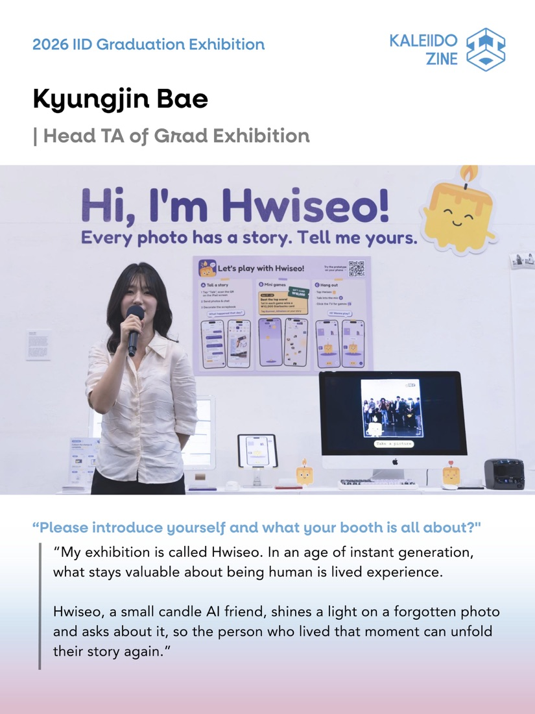
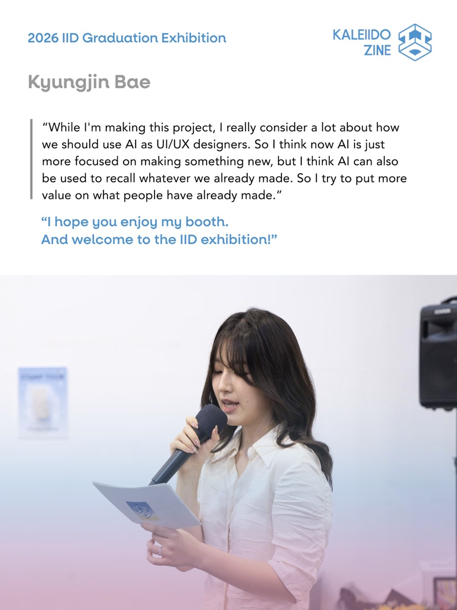
작품 설명 원문
Generative AI can make almost anything look real, yet in its world, the act of living is erased. In an age of instant generation, what stays valuable about being human is lived experience. Hwiseo, a small candle AI friend, shines a light on a forgotten photo and asks about it, so the person who lived that moment can unfold their story again. AI asks and people tell: a use of AI beyond generation. Rather than storing memories, Hwiseo stays beside you so you can keep living with them.
생성형 AI는 무엇이든 그럴듯하게 만들어내지만, 그 세계에서 '살아감'은 지워진다. 모든 것이 빠르게 생성되는 시대에 사람에게 남는 가치는 직접 겪은 경험이다. 'AI 친구 휘서(輝敍)'는 잊힌 사진 한 장에 빛을 비추고(輝), 그 순간을 산 사람이 자기 이야기를 다시 펼치도록(敍) 묻는다. AI가 묻고 사람이 이야기하는, 생성과는 다른 AI의 쓰임이다. 휘서는 기억을 보관하는 대신, 그 기억과 함께 살아갈 수 있도록 곁에 머문다.
부스 전경
앱으로 돌아가기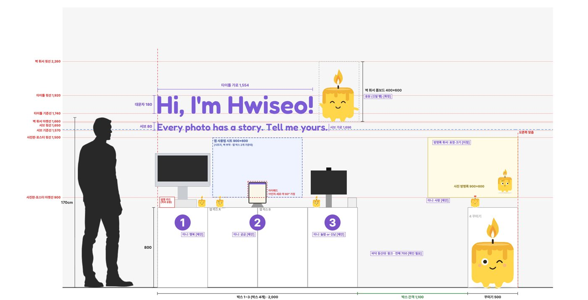
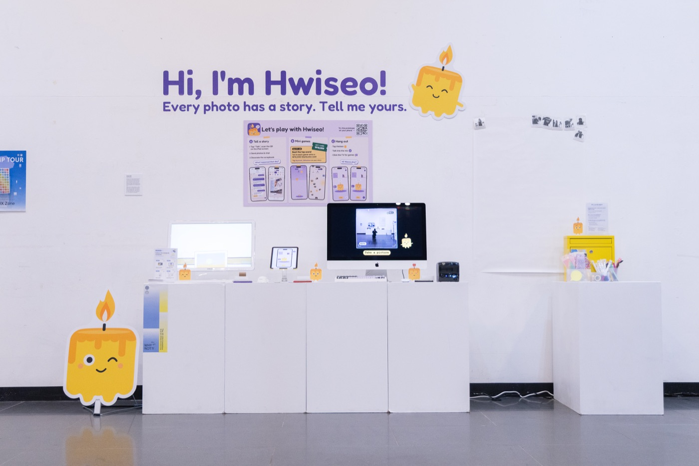
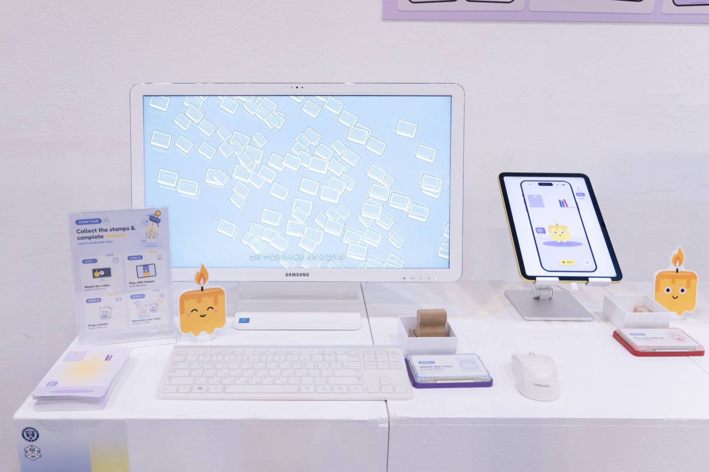
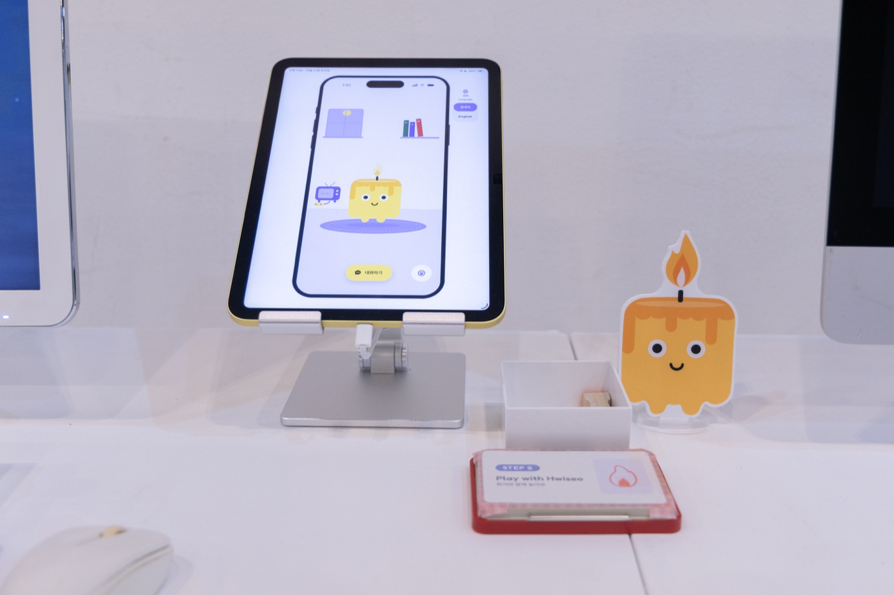
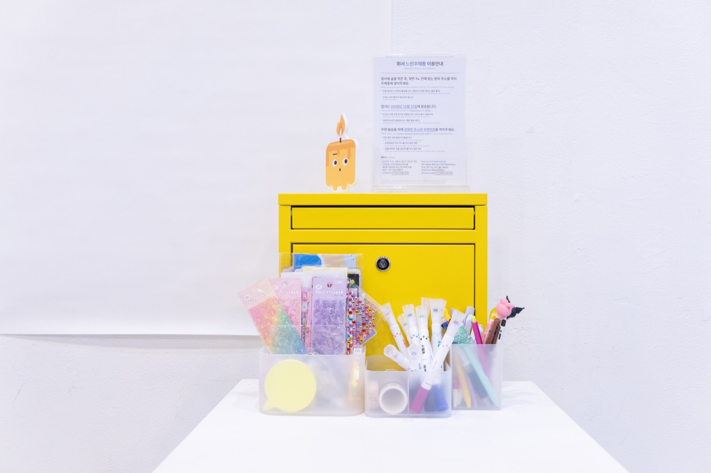
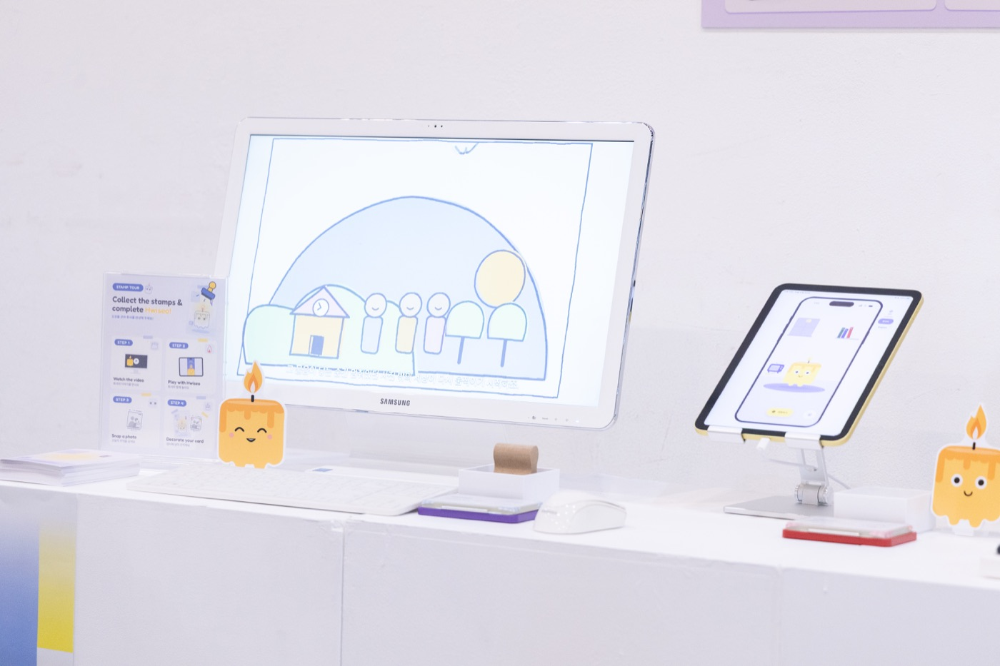
전시 현장
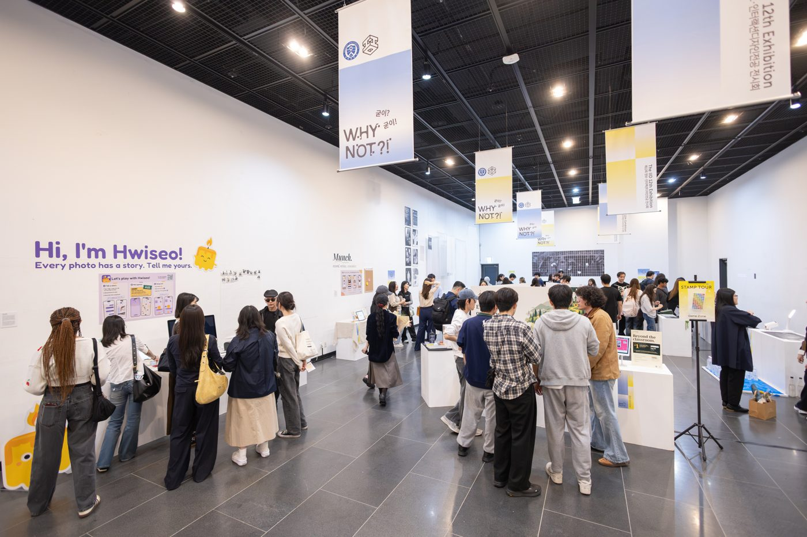
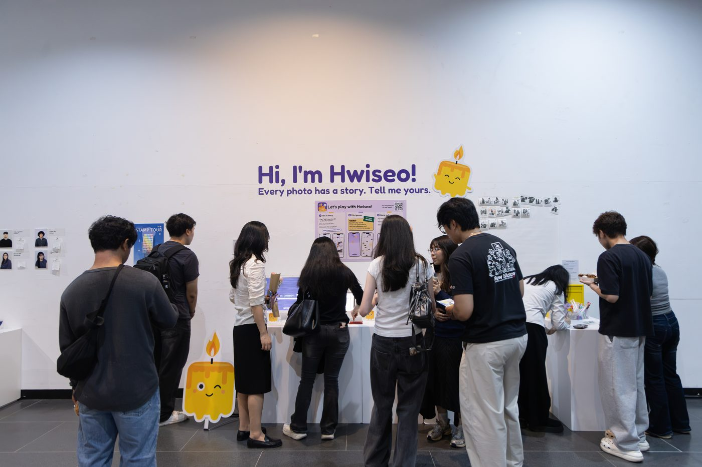
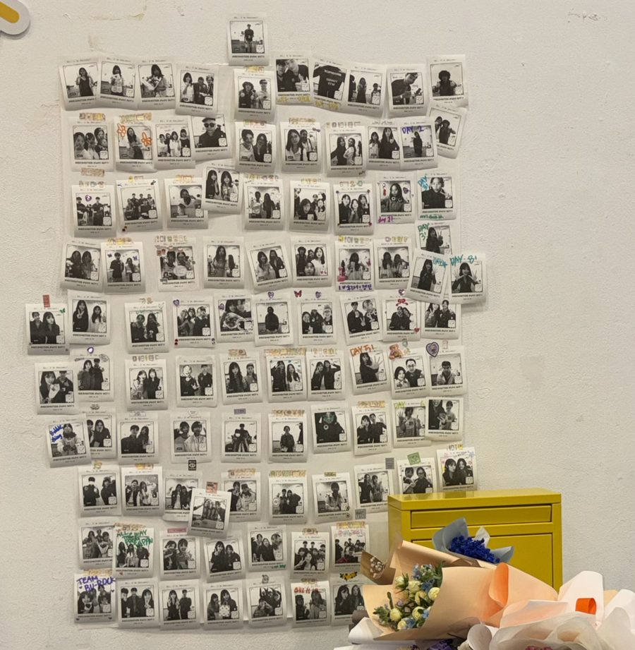